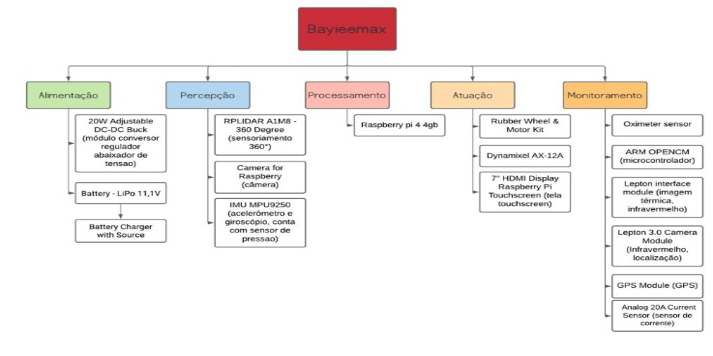
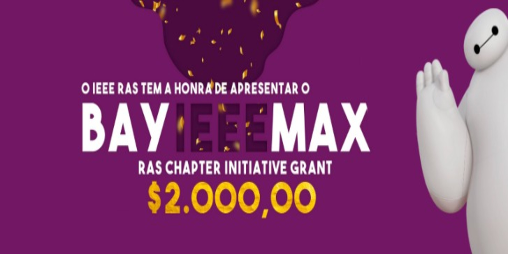
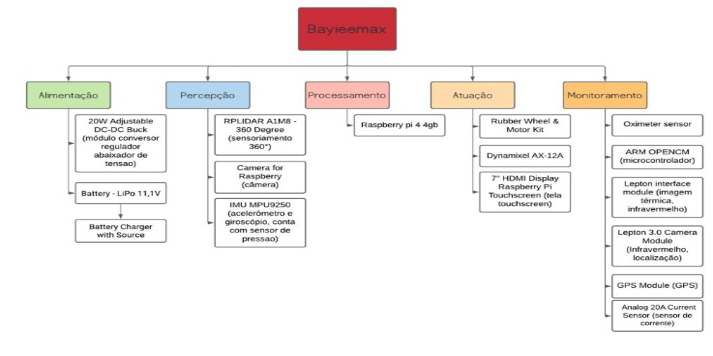
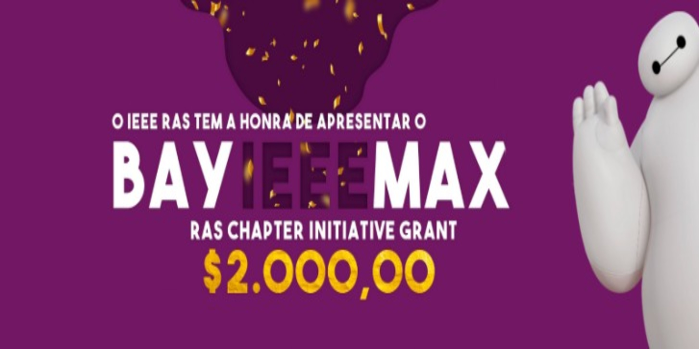

Project informations
- Category: Robot
- Function: Autonomous robot capable of assisting health workers.
- Project date: 2021- 2024
- Project URL: https://rascimatec.github.io/baymax.html
PROJECT BAYIEEEMAX
The project consists of building an autonomous robot capable of assisting health agents in the triage process by measuring patient health parameters such as blood pressure, oxygenation, and temperature and recording them in the respective patient records. The robot will display questions on an LCD screen and will also sound them out through a loudspeaker and receive the patient's answers via voice commands.
During the execution of the project, a model will be built in 3D modeling software for the robot's body for later 3D printing. In addition, a printed circuit board will be developed to interconnect the sensors, actuators, and controller, as well as rectify the input voltage in order to make it available for charging the batteries. Finally, the robot's operation logic will be implemented by means of the ROS (Robot Operating System) framework.
The realization of the project was only possible thanks to the funding of $2,000 dollars received through a RAS Chapter Initiative Grant from the RAS.
Development
Subsystems Definition
In the very first stages of the project a PBS (Project Structure Board) was built containing all the essential subsystems and which components would be part of each one. The image below shows this structure, divided between: Feeding, Perception, Processing, Acting and Monitoring.
Simulation
ROS is a framework that has a number of useful tools for robot development. For example, it is capable of simplifying for the user the process of communication between the different components of a robot, such as the motors, sensors, batteries, and the software through a system based on topics and messages.
ROS was adopted as a tool in this project for the simulation and implementation of the robot's logic because it is an open-source project that has several packages already developed, natively supports C++ and Python programming languages, and also because it can be loaded directly into embedded systems, such as the Raspberry Pi 4, the controller that will work as the robot's "brain".
A major advantage of simulation is that complex virtual environments similar to real hospitals can be built, which would be difficult to access for all the testing needed throughout the project. In addition, faults can be identified and improvements implemented without the need to have the robot in hand or the construction of a training ground.
We are currently developing teleoperation, which will be used for testing purposes on the robot after it is assembled, autonomous navigation, and integration with the sensors that will be used during triage.
Electronics
KiCad is an open source computer program for computer-aided electronic design, with the objective of facilitating the conception of layouts and their conversion to printed circuit boards.
KiCad was used in this project as a tool for making the printed circuit board (PCB), which was built by assembling the circuit itself, placing essential components for the robot's operation, and because it is Open Source, it allows the use of 3D models and footprints, created by your company or users of this Software.
The use of KiCad allows the user to develop a circuit in advance, building a board that will be made for the desired operation, with the desired components, avoiding expenses with risk of misplacement or lack of space between components. In addition, possible circuit connection faults are identified during circuit construction, and the software itself alerts you of any connection errors found.
Hodiernamente, is being developed the Main board, having in its circuit a MicroController called STM32F103C8T6, which will connect to the Motherboard, whose main component is the Raspberry PI 4 Model B, which will monitor this Microcontroller. In this way, it allows the operation of the motors, sensors, GPs and voice recognition that will be used in the medical triage of patients.